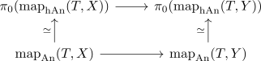

homotopy category yoneda trick for anima
Proposition
Let $f: X \rightarrow Y$ be a map of anima. TFAE:
- $f: X \rightarrow Y$ is an equivalence
- for all test anima $T$ the map $\mathrm{map}(T,f): \mathrm{map}(T,X) \rightarrow \mathrm{map}(T,Y)$ is a $\pi_0$ equivalence
Proof
1) $\implies$ 2)
postcomposition with equivalence
2) $\implies$ 1)
to show that a map $f$ is an equivalence it suffices to show that in the homotopy category $\mathrm{hAn}$. So there it suffices to show that $\mathrm{map}_{\mathrm{hAn}}(T,f)$ is an equivalence. By hom of the homotopy category as path component of the mapping space we can identify

Advantage
- dont have to deal with pointed maps / pointed anima